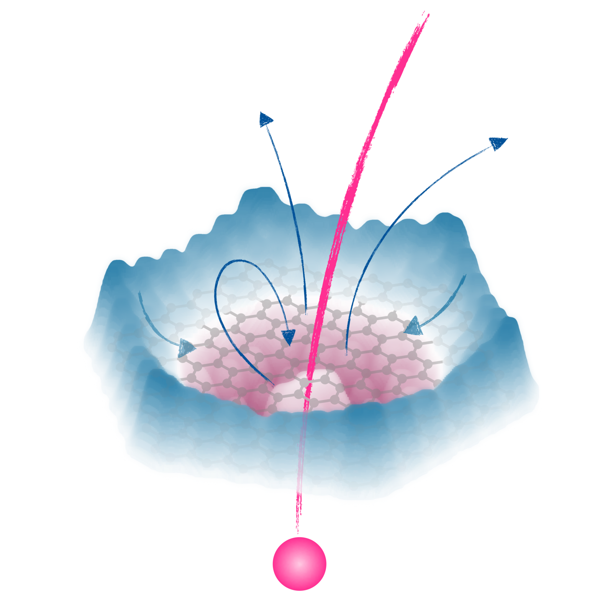

Quantum materials are an important part of an ever-changing world, which can include common everyday elements such as graphene, which help shape interesting concepts that can help change the way in which we live in the future.
Quantum materials are officially defined as: “materials with a strong electronic correlation or some type of electronic order”
However, an alternative and improved definition of quantum materials is: “Quantum materials are solids with exotic physical properties that arise from the interactions of their electrons, beginning at atomic and subatomic scales where the extraordinary effects of quantum mechanics cause unique and unexpected behaviours.” This website will take you through both the interesting history of quantum materials, as well as where it is possible for them to take us in the future.